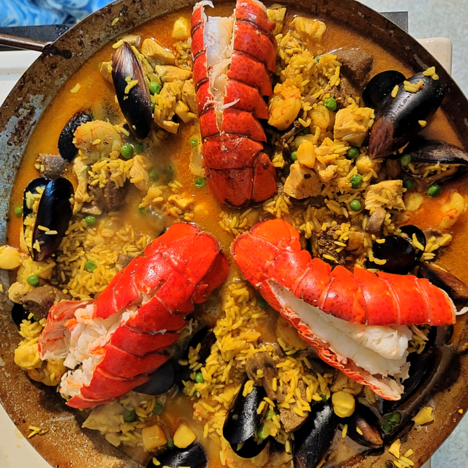

Paella

Description
This dish is originally from Valencia, Spain and is one of the
best-known dishes in Spanish cuisine. Paella can be seafood only
or it can be mixed with poultry(chicken or duck). Paella de
marisco replaces meat with seafood and omits beans and green
vegetables. Paella mixta combines meat, seafood, vegetables,
and sometimes beans, with the traditional rice.
Ingredients
- 21⁄2 cups uncooked white rice
- 6 cups chicken stock, divided
- 3 cloves garlic
- 1 teaspoon chopped fresh parsley
- 1⁄2 teaspoon curry powder
- 5 saffron threads
- salt and ground black pepper to taste
- 1⁄4 cup olive oil
- 1 onion, diced
- 2 cups peeled and deveined small shrimp, diced
- 6 small lobster tails
- 1 (3 pound) whole chicken, cut into small pieces
- 1⁄2 pound clams in shell, scrubbed
- 1 (8 ounce) jar mushrooms, drained
- 1 cup green peas
- 1⁄4 pound mussels in shell, scrubbed
Instructions
- Rinse the rice with cold water; drain; set aside. Bring the chicken stock to a boil in a saucepan over medium-high heat, reduce the heat to low, cover, and keep warm. Work the garlic, parsley, curry powder, saffron threads, salt, black pepper, and 1/2 cup of the hot chicken stock together with a mortar and pestle until a smooth liquid forms; set the seasoning liquid aside.
- Heat the olive oil in a paella pan over medium-high heat; cook and stir the onion until lightly browned. Stir in the chicken, shrimp, lobster, and clams; cook and stir until the chicken is no longer pink in the center, about 10 minutes. Pour in the seasoning liquid.
- Stir in the rice, pour in the hot chicken stock, and simmer until the rice is nearly tender, about 15 minutes. Add mushrooms, peas, and mussels; stir two times, and simmer for 10 minutes. Remove from heat; cover and let stand until rice is soft and flaky, about 7 minutes.